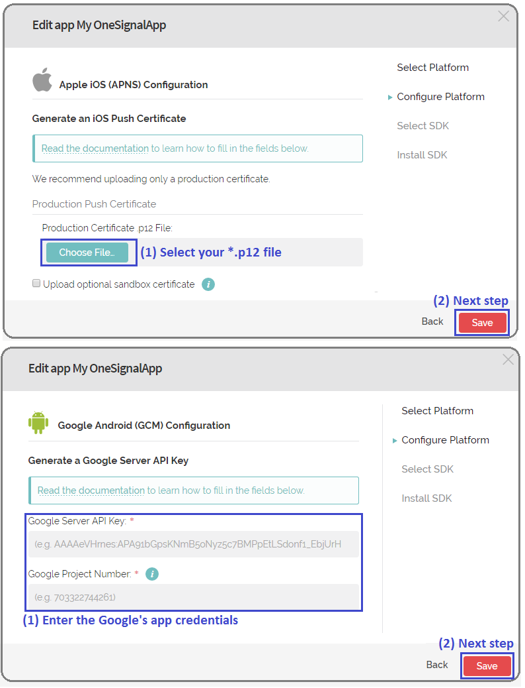

HowTo: Register an application to use OneSignal services
App ID and REST API Key are the credentials to identify your application in OneSignal to send push notifications.
This document describes the steps to get them from the OneSignal website.
Step 1 - Get certificates
Get the certificates for each platform deployed.
Refer to:
- HowTo: Configuring Push Notifications in iOS Applications (or try OneSignal's Provisionator wizard)
- HowTo: Configuring Push Notifications in Android Applications.
Step 2 - Log in
Go to the OneSignal site, enter your user credentials, and log in.
Step 3 - Create a new app
Select the "Add a new app" option in the OneSignal dashboard.
Enter a name for your application in OneSignal.

A wizard will be displayed with four steps:
- Select a platform to deploy.
GeneXus only supports Android and iOS.
Note: First, you must indicate one. Then you can update your OneSignal app from its settings and add the other one.
- Enter the certificates obtained in step 1 depending on the platform you selected in the previous step.

- Select SDK is not necessary; you can skip it.
- Install SDK is not necessary; you can skip it.
Step 4 - Get the credentials
On the "App settings" option, select the "Key & IDs" tab and get OneSignal's App ID and REST API Key.
OneSignal error Codes
Below is a list of errors that can be obtained when using Notification Provider API with OneSignal.
- 1: Unkown error. See Error Description for more details.
- 3: OneSignal Object ID is required: Method parameter "OneSignal Object ID" (Provider DeviceId) was not set.
- 4: iOS invalid device token: Device Token specified is not valid.
- 5: "GCMSenderId is required". GCMSenderId must be specified in OneSignalPush Config.
- 6: Device Token is required.
- 7: No channels specified. At least 1 channel must be set.
- 10: "Application ID parameter is Required": ApplicationId must be specified in OneSignalPush Config.
- 11: "REST API Key parameter is Required": RestAPIKey must be specified in OneSignalPush Config.
- 112: Invalid Channel Name: Error code indicating an invalid channel name. A channel name is either an empty string (the broadcast channel) or contains only a-zA-Z0-9_* characters and starts with a letter.
- 114: Invalid Device Token.
- 140: Exceeded_Quota: Error code indicating that an application quota was exceeded.
| Backlinks | |
| HowTo: Push Notifications using external provider | Notifications Provider property |
| OneSignal - App ID property | OneSignal - REST API Key property |